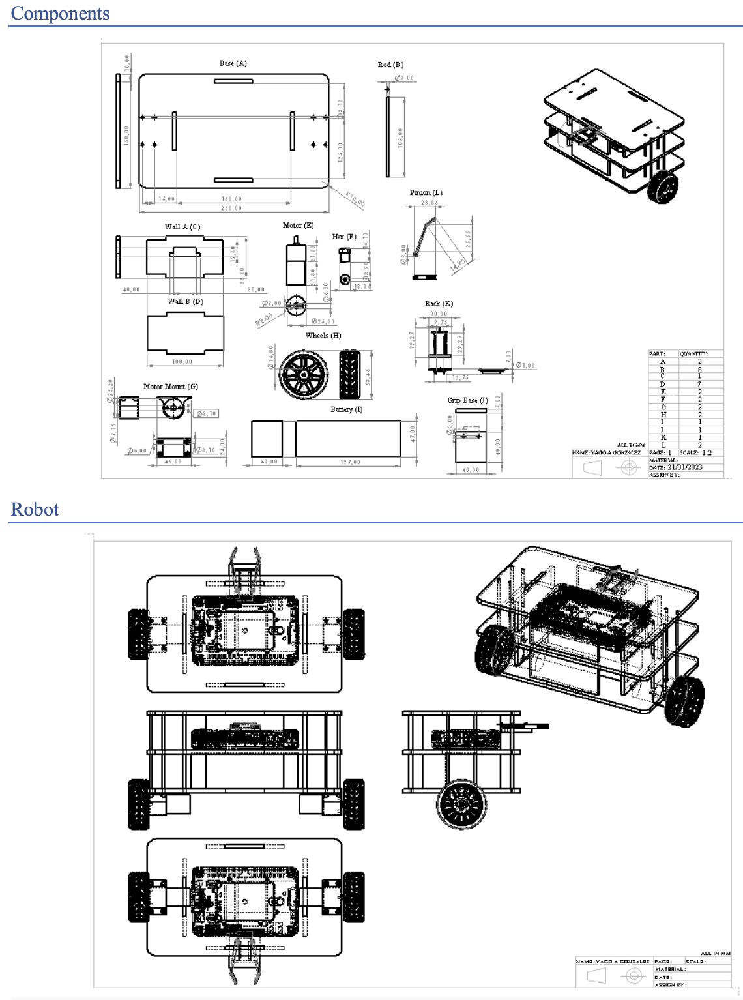
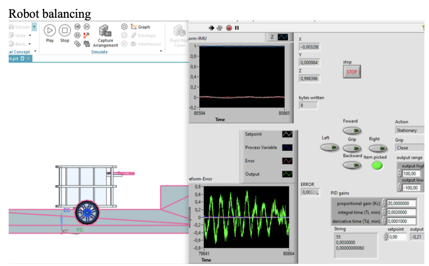

Projects related to CAD modeling and engineering using Siemens NX.


Two-Wheel Self-Balancing Robot
This project focuses on designing a self-balancing robot capable of maintaining its stability while carrying and transporting objects. The robot uses a PID controller for stability and is controlled via a microcontroller, integrating sensors and actuators for real-time adjustments. The project was developed in Siemens NX for simulation and LabVIEW for control testing.
FluidSim
Hydraulic and pneumatic simulation projects using FluidSim.
Writing Reports
+
Computer Vision for Visually Impaired Children
This project focuses on enhancing accessibility for visually impaired children by leveraging **computer vision and machine learning**. It aims to improve the playability of the classic game **UNO** by enabling real-time card recognition using **OpenCV and deep learning models**. Through **audio feedback and gesture-based interactions**, the system ensures blind children can participate in card games independently, fostering inclusivity and cognitive development.